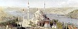

...:::RESÝMLÝ NAMAZ HOCASI:::...

...:::RESÝMLÝ NAMAZ HOCASI:::...
Din Nedir?
Cuma Namazý ve Kýlýnýþý
Ýman Nedir? Nasýl Ýman Edilir?
Bayram Namazlarý ve Kýlýnýþý
Ýslam ve Mükellef
Cenaze Namazý
Ýbadet. Niçin Ýbadet Ediyoruz?
Kaza, Teravih ve Yolcu Namazlarý
Abdest Ýle Ýlgili Bilgiler
Sehiv Secdesi (Unutma Secdesi)
Abdest Alýnýþý
(Resimli)
Oruç Ýle Ýlgili Bilgiler
Gusül Ýle Ýlgili Bilgiler
Zekat Ýle Ýlgili Bilgiler
Teyemmüm Ýle Ýlgili Bilgiler
Hac Ýle Ýlgili Bilgiler
Teyemmüm Yapýlýþý
(Resimli)
Kurban Ýle Ýlgili Bilgiler
Namaz Ýle Ýlgili Bilgiler
Otuz Ýki Farz
Namazýn Kýlýnýþý
(Resimli)
Elli Dört Farz
Namazda Okunan Sureler
Müslüman Çocuðuna Bazý Dini Sualler
Namazda Okunan Dualar
Adab-ý Muaþeret (Ahlak Kurallarý)
* YAZICI, Seyfettin; Müslüman Gençlere Din Bilgisi, Diyanet Halk Kitaplarý - 127
** ARIKAN, Hasan; Muhtasar Ýlmihal, Fazilet Neþriyat, Ýstanbul
*** Þamil Ýslam Ansiklopedisi, Akit Gazetesi Yayýný.